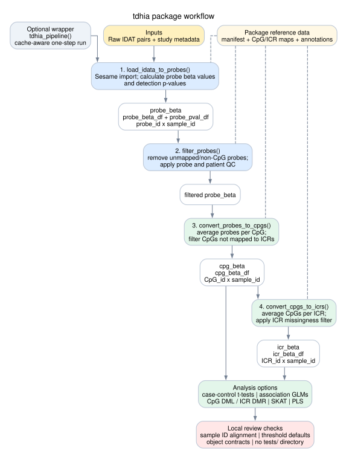

tdhia Package Flow Chart
A simplified local review map for the main package workflow.

How To Read It
The central path is the main preprocessing workflow: raw IDAT files become probe-level beta values, then filtered probes, CpG-level beta values, ICR-level beta values, and finally analysis-ready outputs.
Main Review Points
probe_beta_dfandprobe_pval_dfare probe ID by sample ID.cpg_beta_dfis CpG ID by sample ID.icr_beta_dfis ICR ID by sample ID.- Check sample ID alignment before modeling.
- Review threshold defaults before changing analysis behavior.
The printable one-page version is docs/package-flowchart.pdf. The editable Graphviz source is docs/package-flowchart.dot.